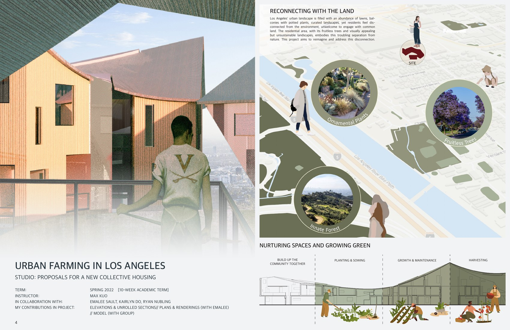
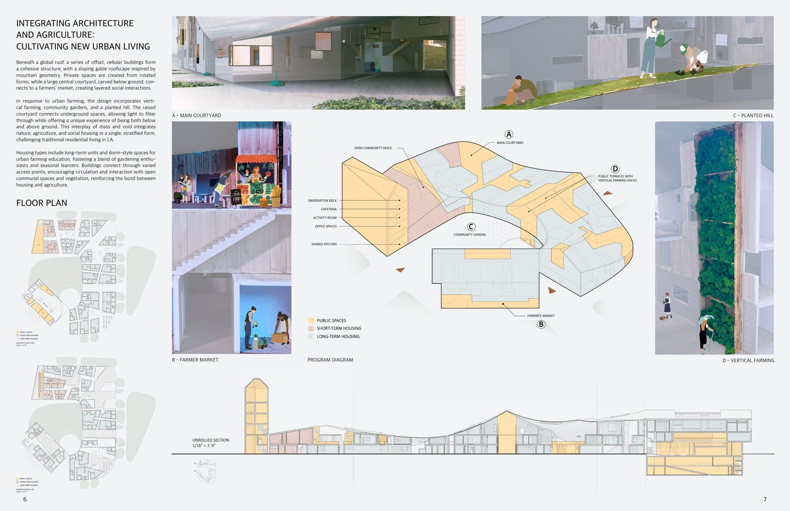
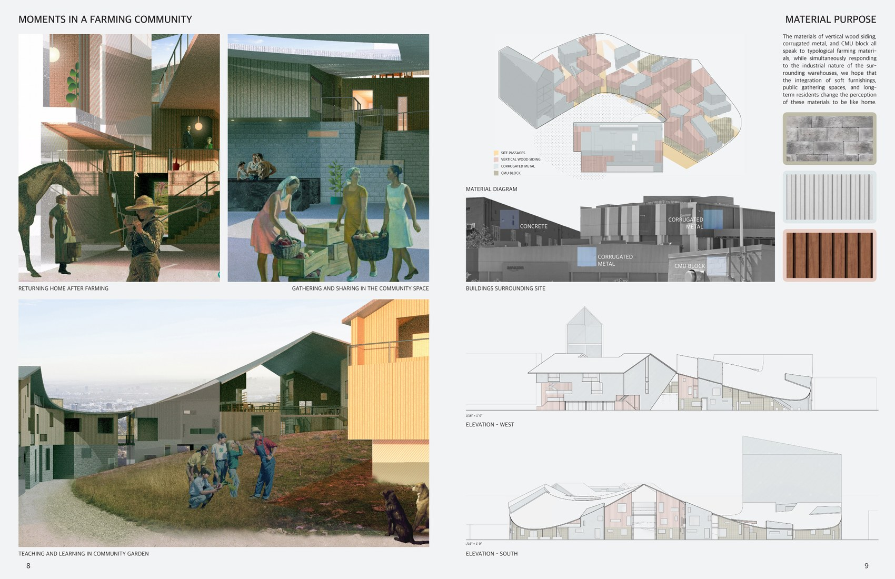

01
Urban Farming in Los Angeles
Collective Housing / Agriculture / Community

A collective housing proposal that reconnects urban living with food systems, green infrastructure, and community.



Collective Housing / Agriculture / Community
A collective housing proposal that reconnects urban living with food systems, green infrastructure, and community.


